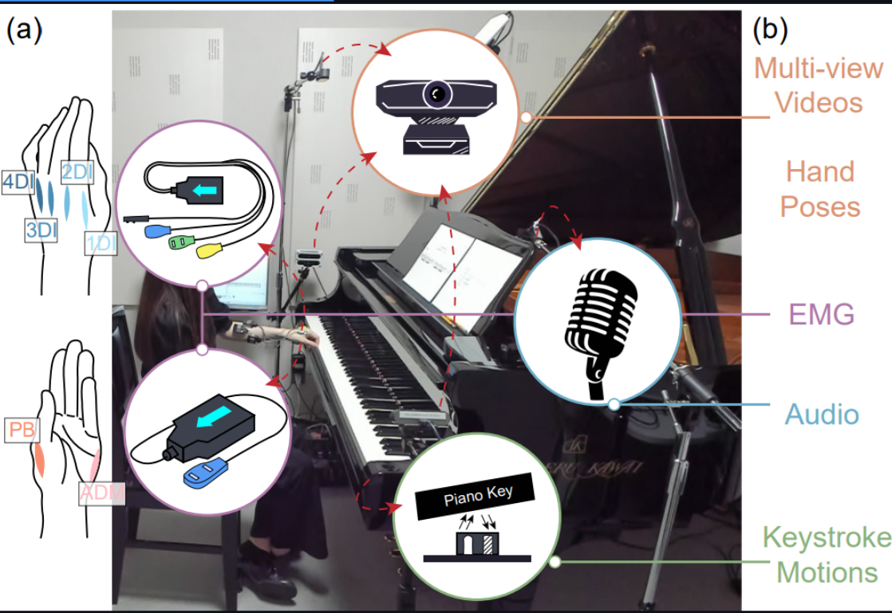

|
Erwin Wu I am an Associate Professor in the Department of Computer Science at Institute of Science Tokyo (Former TokyoTech). I also serve as a Advisory Researcher at Shanda AI Research Tokyo. Before that, I also served as a Senior Researcher at Huawei Research Japan, a Visiting Professor at Carniege Mello University, and a Research Fellow at Sony CSL. I obtained my Ph.D. at Institute of Science Tokyo, advised by Prof. Hideki Koike. And I've received my Bachelor in Computer Science (with honor, top 10%) at Shanghai Jiao Tong University. My research interest lies in the field of Human-Computer Interaction, Machine Learning, and 3D Vision. My primary works include pose prediction for sports training, 3D body/hand pose estimation, and VR/AR visualizations for skill acquisition. Email / CV / Google Scholar / Linkedin |
News |
Research |
|

|
Ruofan Liu, Yichen Peng, Takanori Oku, Chen-Chieh Liao, Erwin Wu, Shinichi Furuya, Hideki Koike NeurIPS, 2025 Chen-Chieh Liao, project page | arXiv | video An approach for Pose to Muscle Estimation in Piano scenarios. |


|
EVER: Exact Volumetric Ellipsoid Rendering for Real-time View Synthesis
Alexander Mai, Peter Hedman, George Kopanas, Dor Verbin, David Futschik, Qiangeng Xu, Falko Kuester, Jonathan T. Barron, Yinda Zhang ICCV, 2025 (Oral Presentation) project page / arXiv Raytracing constant-density ellipsoids yields more accurate and flexible radiance fields than splatting Gaussians, and still runs in real-time. |
Miscellanea |
|
Feel free to steal this website's source code. Do not scrape the HTML from this page itself, as it includes analytics tags that you do not want on your own website — use the github code instead. Also, consider using Leonid Keselman's Jekyll fork of this page. |